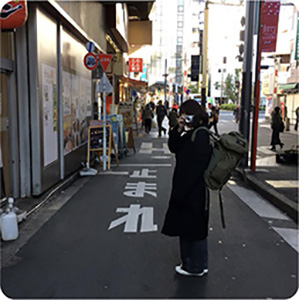

about me
Hitomi Yoshida
北海道函館市出身、札幌市在住。1児のママ。 高校3年間はダンス部に所属し、全国大会・世界大会で優勝。青春真っ只中でした。 卒業後は大手アパレル販売員として、その後7年間はフィットネスインストラクターとしてお客様に寄り添い、笑顔が生まれる瞬間に関わって来ました。 これまで大切にしてきたことは、相手が何を求めているのか、どうしたら喜んでもらえるのかを考え、常に相手に寄り添うこと。 どのお仕事も、始めたきっかけは「楽しそう。やってみたい。心が動く瞬間を大切に、これまでずっと楽しく働いてきました。 そんな私が今、夢中になっているのがWebデザインです。これからはデザインを通して、誰かの笑顔につながるお手伝いをしていきます。


目に見えるものの奥にある想いや温度、音のようなものを感じてほしい。
&は繋がり。see(sea) 海の広がりや、可能性をイメージしてつけました。
skill
- Illustrator
- Photoshop
- figma
- HTML
- CSS
- JavaScript
- JQuery
tool
- LINE
- chatwork
strength
- 社交性
- 傾聴力
- 提案力
- 責任感
- 関係構築力
identity
- 明るく前向き
- やると決めたら即行動
- 観察力が高い
- ストイック
- 相手に寄り添える
love

思い出の瞬間を写真に
残すのが好きです。

ファッションやインテリア雑貨など、 お洒落なものを集めるのが好きです。

音楽は欠かせません。 邦楽も洋楽も幅広く聴きます。
抹茶、ほうじ茶、ごま、きなこ 渋いもの大好きです。

小さい時から好きなテレタビーズ。 おでこが似てるって言われます。笑
旅行が好きで、見たことない風景を 見たり、美味しいものを食べることが 幸せです。